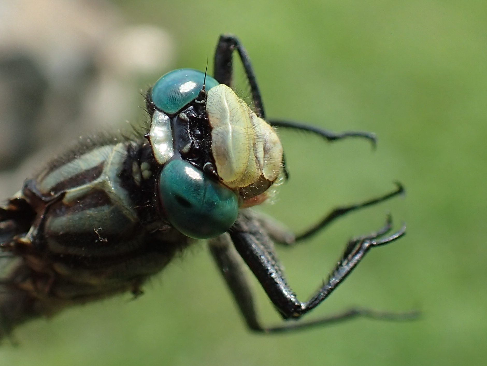
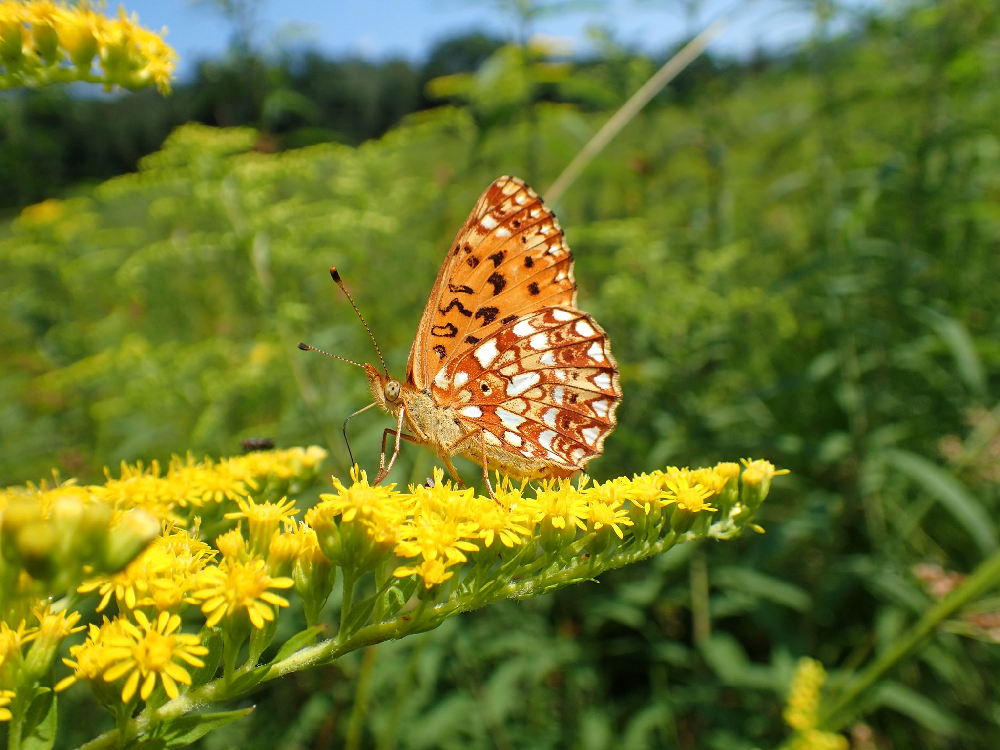
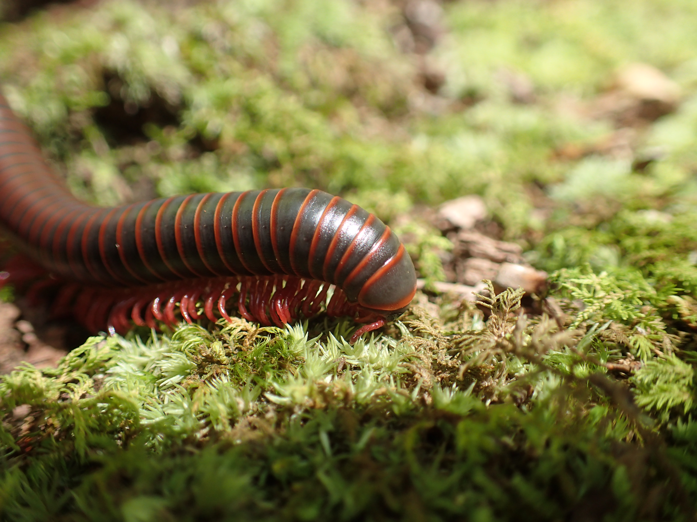
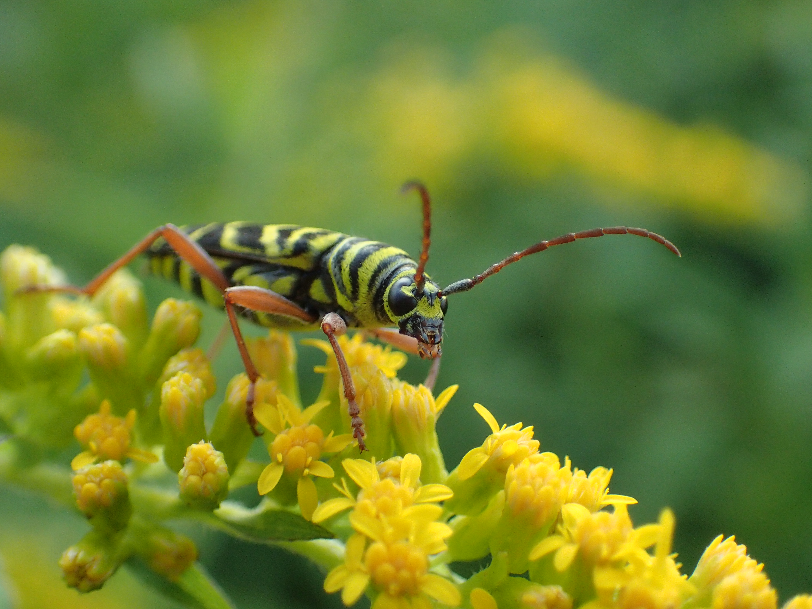
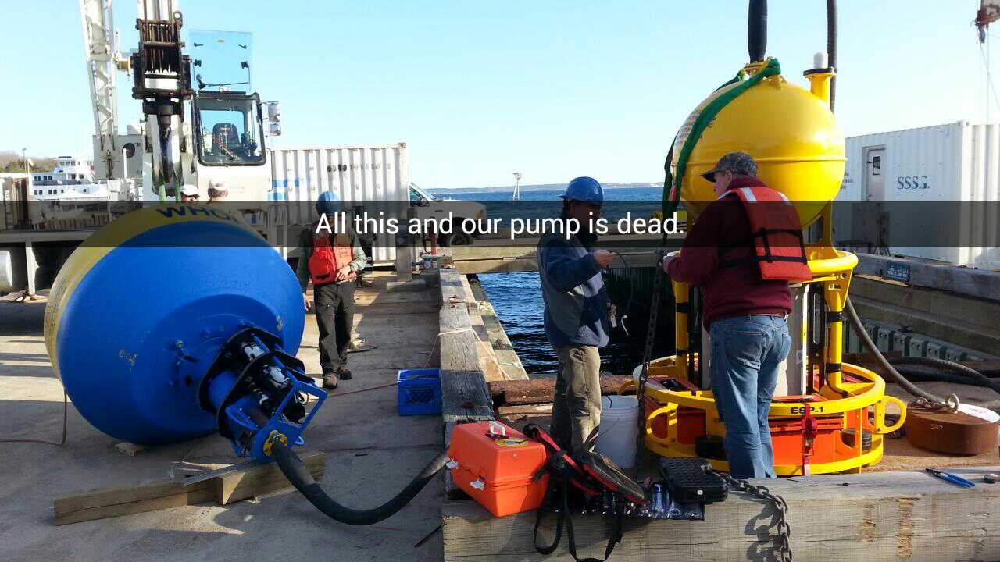
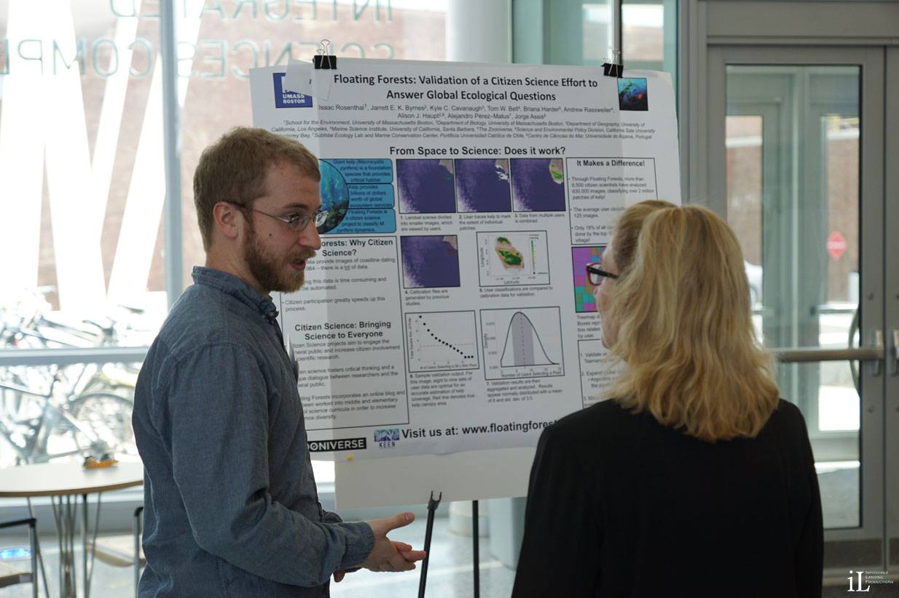
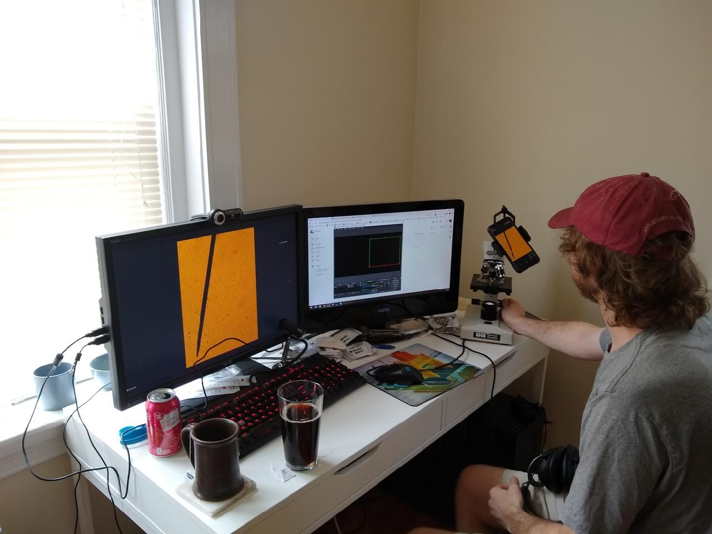

About Me
It’s hard to sum up my research interests with a catchy one liner, but the common thread is the importance of deep and authentic cross-disciplinary dialogues, both across scientific disciplines, as well as between scientists and non-scientists.
I’ve spent most of my life sitting on the line between science and the public. Pre-academia, I was an educator and trail guide at the wonderful Roaring Brook Nature Center, where I was able to get involved in wildlife conservation, education, and rehabilitation from a young age. This was also the beginning of my obsession with macro photography, especially dragonflies.




I carried this fascination with nature through my undergraduate education where I was able to participate in Northeastern University’s Three Seas program. This was a life-changing experience, and the intense focus on SCUBA diving opened my eyes to the world beneath the waves. After Three Seas, I remained at the MSC and contributed to several projects investigating the impacts of the invasive red alga Dasysiphonia japonica.


Following Three Seas, I also had the opportunity to complete a co-op at Woods Hole Oceanographic Institution in the Anderson Harmful Algal Bloom lab where I got some (to put it lightly) hands-on experience with the more technical side of research. My work at WHOI was mainly focused on the early detection of harmful algal blooms (HABS) in the Gulf of Maine via a network of instruments called Environmental Sample Processors.(https://northeasthab.whoi.edu/bloom-monitoring/environmental-sample-processor/). I assisted with the mission programming, maintainence, and deployment of these sensors and was able to see first-hand how modern data streams are transforming the way we learn about the world around us.



My current work at UMass Boston is mostly focused on the Floating Forests citizen science kelp mapping project, although I have found ways to include myself in a plethora of fieldwork and other projects as well. Throughout my contributions to this Floating Forests, I have had the opportunity to work with other ecologists, remote sensing specialists, education researchers, teachers, students, web designers, and machine learning experts - the list is very long, apologies if I left anyone out! Check out my Projects and Publications page for more details on Floating Forests, as well as some of the other things I have been involved with at UMass!

